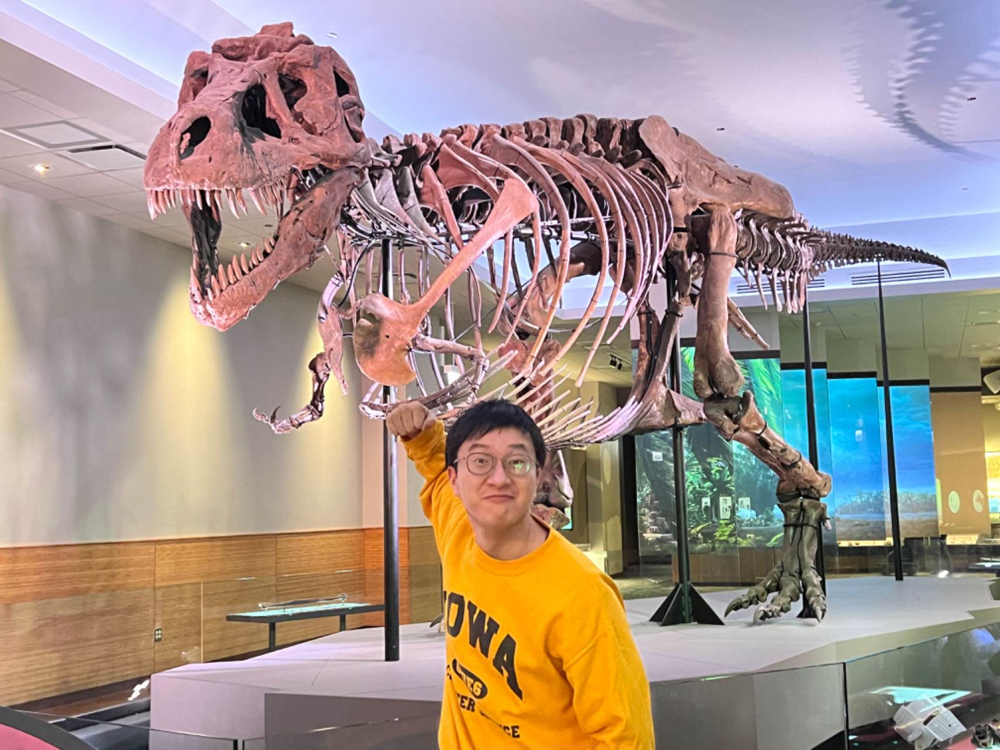

Lihan Hu (胡砺寒)
|  | I am a fourth-year Ph.D. student in the Computer Science Department at the University of Iowa and advised by Dr. Peng Jiang. I am a member of IOWA-HPC Group and Parallel Group. Before coming to UIowa, I received my Master's degree (Sep.2019-Jun.2022, major: Pattern Recognition and Intelligent System) at Hohai University, Nanjing and advised by Prof. Lixin Han. I worked closely with Prof. Hong Yan at the City University of Hong Kong from Sep.2020-Oct.2021. I received my Bachelor's degree (Sep.2014-Jun.2018, major: Computer Science) at Nanjing Audit University, Nanjing.
|
Research Interests
Compiler Optimization
Graph Learning
Efficient Machine Learning Algorithms
Parallel Computing
Selected Publications (Full List)
[IPDPS’25] Improving Accuracy and Efficiency of Graph Embedding Training with Fine-Grained Parameter Management
Lihan Hu, Peng Jiang
[IPDPS’24] cuKE: An Efficient Code Generator for Score Function Computation in Knowledge Graph Embedding
Lihan Hu, Jing Li, and Peng Jiang
[NeurIPS’22] Exposing and Exploiting Fine-Grained Block Structures for Fast and Accurate Sparse Training
Peng Jiang, Lihan Hu, and Shihui Song